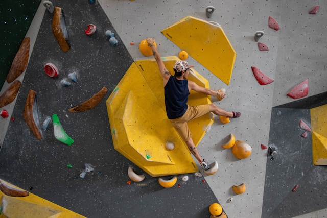
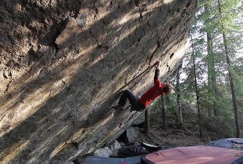

Bouldering
Bouldering är en typ av klättring som sker på låg höjd utan rep eller sele. Vanligtvis klättrar man inte högre än ca 4-5 meter och för att dämpa fallet används istället mjuka mattor. Till skillnad från repklättring kräver bouldering inte lika mycket uthållighet eftersom lederna är kortare. Istället ligger större fokus på teknik, koordination och problemlösning.

Bouldering går att utföra både inomhus, vanligen i klättergym, men också utomhus där man klättrar på stenar (därav namnet bouldering). Lederna man klättrar kallas för “problem”. Ett av de mest kända problemen heter “Burden of Dreams” och finns strax utanför den finska staden Loviisa. Burden of Dreams klättrades för första gången av Nalle Hukkataival i oktober 2016 och var fram till november 2025 det svåraste problemet någon klarat.
